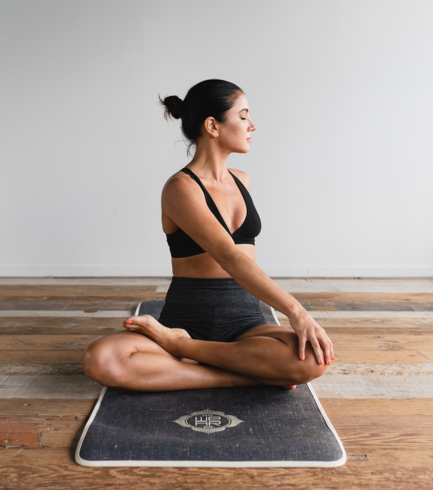
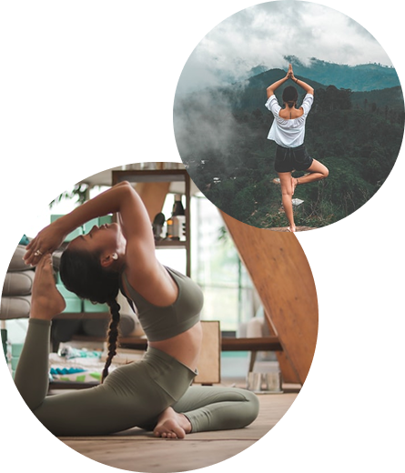

Обучение йоге в зале и онлайн
По системе самосовершенствования
Фалунь Дафа (Фалуньгун)
Подробнее
Фалунь Дафа (Фалуньгун)
Занятия по расписанию

Занятия по расписанию
Что такое фалуньгун?(Фалунь Дафа)
Это практика самосовершенствования духовных и нравственных качеств человека в соответствии со свойством Вселенной «Чжэнь Шань Жэнь» (Истина-Доброта-Терпение), также включает в себя пять несложных для изучения упражнений.
Подробнее

Практическое применение
В чём польза занятий:
Занятие йогой - это важный шаг к самосовершенствованию
